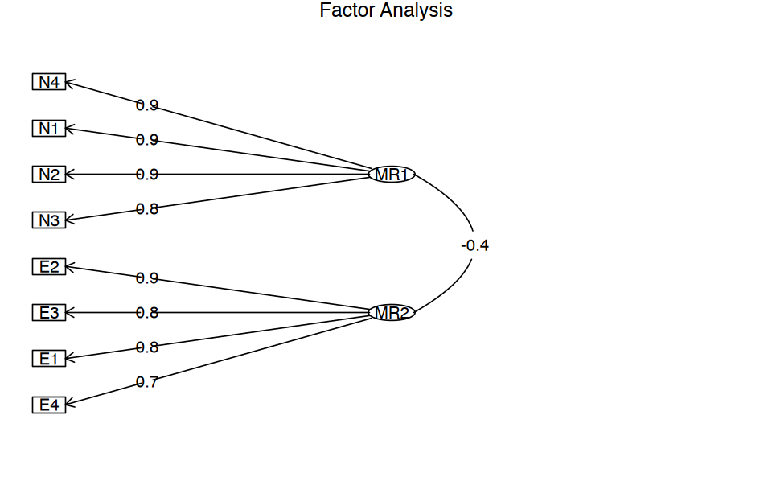

source("../../code/_common.R")
suppressPackageStartupMessages({
library("lavaan")
library("semPlot")
library("knitr")
library("kableExtra")
library("tidyr")
library("corrplot")
library("tidySEM")
library("psych")
})17 Il modello multifattoriale
17.1 Modello multifattoriale: fattori ortogonali
La teoria dei due fattori ha orientato per diversi anni le ricerche sull’intelligenza, finché Thurstone (1945) non propose una sua modifica, conosciuta come teoria multifattoriale. Secondo Thurstone la covariazione tra le variabili manifeste non può essere spiegata da un unico fattore generale. Invece è necessario ipotizzare l’azione causale di diversi fattori, definiti comuni, i quali si riferiscono solo ad alcune delle variabili considerate.
Il modello plurifattoriale assume che ciascuna variabile manifesta sia espressa come funzione lineare di un certo numero \(m\) di fattori comuni, \(\xi_1, \xi_2, \dots, \xi_m\), responsabili della correlazione con le altre variabili, e di un solo fattore specifico (termine d’errore), responsabile della variabilità della variabile stessa. Per \(p\) variabili manifeste, \(Y_1, Y_2, \dots, Y_p\), il modello fattoriale diventa quello indicato dal sistema di equazioni lineari descritto di seguito. Idealmente, \(m\) dovrebbe essere molto più piccolo di \(p\) così da consentire una descrizione parsimoniosa delle variabili manifeste in funzione di pochi fattori soggiacenti.
Le variabili manifeste \(Y\) sono indicizzate da \(i = 1, \dots, p.\) Le variabili latenti \(\xi\) (fattori) sono indicizzate da \(j = 1, \dots, m.\) I fattori specifici \(\delta\) sono indicizzati da \(i = 1, \dots, p.\) Le saturazioni fattoriali si distinguono dunque tramite due indici, \(i\) e \(j\): il primo indice si riferisce alle variabili manifeste, il secondo si riferisce ai fattori latenti.
Indichiamo con \(\mu_i\), con \(i=1, \dots, p\) le medie delle \(p\) variabili manifeste \(Y_1, Y_2, \dots, Y_p\). Se non vi è alcun effetto delle variabili comuni latenti, allora la variabile \(Y_{ijk}\), dove \(k\) è l’indice usato per i soggetti, sarà uguale a:
\[ \begin{equation} \begin{cases} Y_{1k} &= \mu_1 + \delta_{1k} \\ &\vdots\\ Y_{ik} &= \mu_i + \delta_{ik}\\ &\vdots\\ Y_{pk} &= \mu_p + \delta_{pk} \notag \end{cases} \end{equation} \]
Se invece le variabili manifeste rappresentano la somma dell’effetto causale di \(m\) fattori comuni e di \(p\) fattori specifici, allora possiamo scrivere:
\[ \begin{equation} \begin{cases} Y_1 - \mu_1 &= \lambda_{11}\xi_1 + \dots + \lambda_{1k}\xi_k \dots +\lambda_{1m}\xi_m + \delta_1 \\ &\vdots\\ Y_i - \mu_i &= \lambda_{i1}\xi_1 + \dots + \lambda_{ik}\xi_k \dots +\lambda_{im}\xi_m + \delta_i\\ &\vdots\\ Y_p - \mu_p &= \lambda_{p1}\xi_1 + \dots + \lambda_{pk}\xi_k \dots +\lambda_{pm}\xi_m + \delta_p \notag \end{cases} \end{equation} \]
Nel precedente sistema di equazioni lineari,
- \(\xi_j\), con \(j=1, \dots, m\), rappresenta la \(j\)-esima variabile inosservabile a fattore comune (ossia il \(j\)-esimo fattore comune a tutte le variabili \(Y_i\));
- \(\lambda_{ij}\) rappresenta il parametro, detto saturazione o peso fattoriale, che riflette l’importanza del \(j\)-esimo fattore comune nella composizione della \(i\)-esima variabile osservabile;
- \(\delta_i\) rappresenta il fattore specifico (o unico) di ogni variabile manifesta \(Y_i\).
In conclusione, secondo il modello multifattoriale, le variabili manifeste \(Y_i\), con \(i=1, \dots, p\), sono il risultato di una combinazione lineare di \(m < p\) fattori inosservabili ad esse comuni \(\xi_j\), con \(j=1, \dots, m\), e di \(p\) fattori specifici \(\delta_i\), con \(i=1, \dots, p\), anch’essi inosservabili e di natura residua.
17.1.1 Assunzioni del modello multifattoriale
Le variabili inosservabili a fattore comune \(\xi_j\), con \(j=1, \dots, m\), in quanto latenti, non possiedono unità di misura. Pertanto, per semplicità si assume che abbiano media zero, \(\mathbb{E}(\xi_j)=0\), abbiano varianza unitaria, \(\mathbb{V} (\xi_j)= \mathbb{E}(\xi_j^2) - [\mathbb{E}(\xi_j)]^2=1\), e siano incorrelate tra loro, \(Cov(\xi_j, \xi_h)=0\), con \(j, h = 1, \dots, m; \;j \neq h\). Si assume inoltre che le variabili a fattore specifico \(\delta_i\) siano tra loro incorrelate, \(Cov(\delta_i,\delta_k)=0\), con \(i, k = 1, \dots, p, \; i \neq k\), abbiano media zero, \(\mathbb{E}(\delta_i)=0\), e varianza uguale a \(\mathbb{V} (\delta_i) = \psi_{ii}\). La varianza \(\psi_{ii}\) è detta varianza specifica o unicità della \(i\)-esima variabile manifesta \(Y_i\). Si assume infine che i fattori specifici siano linearmente incorrelati con i fattori comuni, ovvero \(Cov(\xi_j, \delta_i)=0\) per ogni \(j=1, \dots, m\) e per ogni \(i=1\dots,p\).
17.1.2 Interpretazione dei parametri del modello
17.1.2.1 Covarianza tra variabili e fattori
Nell’ipotesi che le variabili \(Y_i\) abbiano media nulla, la covarianza tra \(Y_i\) e \(\xi_j\) è uguale alla saturazione fattoriale \(\lambda_{ij}\):
\[ \begin{equation} \begin{aligned} Cov(Y_i, \xi_j) &= \mathbb{E}(Y_i \xi_j)\notag\\ &=\mathbb{E}\left[(\lambda_{i1} \xi_1 + \dots + \lambda_{im} \xi_m + \delta_i)\xi_j \right]\notag\\ &= \lambda_{i1}\underbrace{\mathbb{E}(\xi_1\xi_j)}_{=0} + \dots + \lambda_{ij}\underbrace{\mathbb{E}(\xi_j^2)}_{=1} + \dots \notag\\ & \; + \lambda_{im}\underbrace{\mathbb{E}(\xi_m\xi_j)}_{=0} + \underbrace{\mathbb{E}(\delta_i \xi_j)}_{=0}\notag\\ &= \lambda_{ij}.\notag \end{aligned} \end{equation} \]
Anche nel modello multifattoriale, dunque, le saturazioni fattoriali rappresentano le covarianze tra le variabili e i fattori:
\[ Cov(Y_i, \xi_j) = \lambda_{ij} \qquad i=1, \dots, p; \quad j= 1, \dots, m. \]
Naturalmente, se le variabili sono standardizzate, le saturazioni fattoriali diventano correlazioni:
\[ r_{ij} = \lambda_{ij}. \]
17.1.2.2 Espressione fattoriale della varianza
Come nel modello monofattoriale, la varianza delle variabili manifeste si decompone in una componente dovuta ai fattori comuni, chiamata comunalità, e in una componente specifica alle \(Y_i\), chiamata unicità. Nell’ipotesi che le variabili \(Y_i\) abbiano media nulla, la varianza di \(Y_i\) è uguale a
\[ \begin{equation} \begin{aligned} \mathbb{V} (Y_i) &=\mathbb{E}\left[ (\lambda_{i1} \xi_1 + \dots + \lambda_{im} \xi_m + \delta_i)^2 \right]. \end{aligned} \end{equation} \](eq-eq-var-multifatt)
Come si sviluppa il polinomio precedente? Il quadrato di un polinomio è uguale alla somma dei quadrati di tutti i termini più il doppio prodotto di ogni termine per ciascuno di quelli che lo seguono. Il valore atteso del quadrato del primo termine è uguale a \(\lambda_{i1}^2\mathbb{E}(\xi_1^2)\) ma, essendo la varianza di \(\xi_1\) uguale a \(1\), otteniamo semplicemente \(\lambda_{i1}^2\). Lo stesso vale per i quadrati di tutti i termini seguenti tranne l’ultimo. Infatti, \(\mathbb{E}(\delta_i^2)=\psi_{ii}\). Per quel che riguarda i doppi prodotti, sono tutti nulli. In primo luogo perché, nel caso di fattori ortogonali, la covarianza tra i fattori comuni è nulla, \(\mathbb{E}(\xi_j \xi_h)=0\), con \(j \neq h\). In secondo luogo perché il fattori comuni cono incorrelati con i fattori specifici, quindi \(\mathbb{E}(\delta_i \xi_j)=0\).
In conclusione,
\[ \begin{equation} \begin{aligned} \mathbb{V}(Y_i) &= \lambda_{i1}^2 + \lambda_{i2}^2 + \dots + \lambda_{im}^2 + \psi_{ii} \notag\\ &= \sum_{j=1}^m \lambda_{ij}^2 + \psi_{ii}\notag\\ &= h_i^2 + \psi_{ii}\notag\\ &=\text{communalità} + \text{unicità},\notag \end{aligned} \end{equation} \]
la varianza della variabile manifesta \(Y_i\) è suddivisa in due parti: il primo addendo è definito comunalità poiché rappresenta la parte di variabilità della \(Y_i\) spiegata dai fattori comuni; il secondo addendo è invece definito varianza specifica (o unicità) poiché esprime la parte di variabilità della \(Y_i\) non spiegata dai fattori comuni.
17.1.2.3 Espressione fattoriale della covarianza
Quale esempio, consideriamo il caso di \(p=5\) variabili osservabili e \(m=2\) fattori ortogonali. Se le variabili manifeste sono ‘centrate’ (ovvero, se a ciascuna di esse sottraiamo la rispettiva media), allora il modello multifattoriale diventa
\[ \begin{equation} \begin{aligned} Y_1 &= \lambda_{11} \xi_1 + \lambda_{12} \xi_2 + \delta_1,\notag\\ Y_2 &= \lambda_{21} \xi_1 + \lambda_{22} \xi_2 + \delta_2,\notag\\ Y_3 &= \lambda_{31} \xi_1 + \lambda_{32} \xi_2 + \delta_3,\notag\\ Y_4 &= \lambda_{41} \xi_1 + \lambda_{42} \xi_2 + \delta_4,\notag\\ Y_5 &= \lambda_{51} \xi_1 + \lambda_{52} \xi_2 + \delta_5.\notag \end{aligned} \end{equation} \]
Nell’ipotesi che le variabili \(Y_i\) abbiano media nulla, la covarianza tra \(Y_1\) e \(Y_2\), ad esempio, è uguale a:
$$ \[\begin{equation} \begin{aligned} Cov(Y_1, Y_2) &= \mathbb{E}\left( Y_1 Y_2\right) \notag\\ &= \mathbb{E}\left[ (\lambda_{11} \xi_1 + \lambda_{12} \xi_2 + \delta_1) (\lambda_{21} \xi_1 + \lambda_{22} \xi_2 + \delta_2) \right]\notag\\ &= \lambda_{11} \lambda_{21} \mathbb{E}(\xi_1^2) + \lambda_{11} \lambda_{22} \mathbb{E}(\xi_1 \xi_2) +\notag \lambda_{11} \mathbb{E}(\xi_1 \delta_2) +\notag\\ &\quad \lambda_{12} \lambda_{21}\mathbb{E}(\xi_1 \xi_2)\, + \lambda_{12} \lambda_{22}\mathbb{E}(\xi^2_2)\, + \lambda_{12} \mathbb{E}(\xi_2\delta_2) +\notag\\ &\quad \lambda_{21} \mathbb{E}(\xi_1\delta_1) +\notag \lambda_{22} \mathbb{E}(\xi_2\delta_1) + \mathbb{E}(\delta_1 \delta_2)\notag\\ &= \lambda_{11} \lambda_{21} + \lambda_{12} \lambda_{22}.\notag \end{aligned} \end{equation}\]
$$ In conclusione, la covarianza tra le variabili manifeste \(Y_l\) e \(Y_m\) riprodotta dal modello è data dalla somma dei prodotti delle saturazioni \(\lambda_l \lambda_m\) nei due fattori.
Esempio. Consideriamo i dati riportati da {cite:t}brown2015confirmatory, ovvero otto misure di personalità raccolte su un campione di 250 pazienti che hanno concluso un programma di psicoterapia. Le scale sono le seguenti:
- anxiety (N1),
- hostility (N2),
- depression (N3),
- self-consciousness (N4),
- warmth (E1),
- gregariousness (E2),
- assertiveness (E3),
- positive emotions (E4).
varnames <- c("N1", "N2", "N3", "N4", "E1", "E2", "E3", "E4")
sds <- '5.7 5.6 6.4 5.7 6.0 6.2 5.7 5.6'
cors <- '
1.000
0.767 1.000
0.731 0.709 1.000
0.778 0.738 0.762 1.000
-0.351 -0.302 -0.356 -0.318 1.000
-0.316 -0.280 -0.300 -0.267 0.675 1.000
-0.296 -0.289 -0.297 -0.296 0.634 0.651 1.000
-0.282 -0.254 -0.292 -0.245 0.534 0.593 0.566 1.000'
psychot_cor_mat <- getCov(cors, names = varnames)
n <- 250Eseguiamo l’analisi fattoriale esplorativa con il metodo della massima verosimiglianza ipotizzando due fattori comuni incorrelati:
n_facs <- 2
fit_efa <- factanal(
covmat = psychot_cor_mat,
factors = n_facs,
rotation = "varimax",
n.obs = n
)Esaminiamo le saturazioni fattoriali:
lambda <- fit_efa$loadings
print(lambda)
Loadings:
Factor1 Factor2
N1 0.854 -0.228
N2 0.826 -0.194
N3 0.811 -0.233
N4 0.865 -0.186
E1 -0.202 0.773
E2 -0.139 0.829
E3 -0.158 0.771
E4 -0.147 0.684
Factor1 Factor2
SS loadings 2.923 2.526
Proportion Var 0.365 0.316
Cumulative Var 0.365 0.681La soluzione fattoriale conferma la presenza di due fattori: il primo fattore satura sulle scale di neutoricismo, il secono sulle scale di estroversione.
La correlazione riprodotta \(r_{12}\) è uguale a \(\lambda_{11}\lambda_{21} + \lambda_{12}\lambda_{22}\)
lambda[1, 1] * lambda[2, 1] + lambda[1, 2] * lambda[2, 2]
0.74928439937518
e corrisponde da vicino alla correlazione osservata 0.767.
L’intera matrice di correlazioni riprodotte è \(\boldsymbol{\Lambda} \boldsymbol{\Lambda}^{\mathsf{T}} + \boldsymbol{\psi}\):
Rr <- lambda %*% t(lambda) + diag(fit_efa$uniq)
Rr %>%
round(3)| N1 | N2 | N3 | N4 | E1 | E2 | E3 | E4 | |
|---|---|---|---|---|---|---|---|---|
| N1 | 1.000 | 0.749 | 0.745 | 0.781 | -0.348 | -0.307 | -0.311 | -0.281 |
| N2 | 0.749 | 1.000 | 0.715 | 0.751 | -0.317 | -0.276 | -0.281 | -0.254 |
| N3 | 0.745 | 0.715 | 1.000 | 0.745 | -0.344 | -0.306 | -0.308 | -0.279 |
| N4 | 0.781 | 0.751 | 0.745 | 1.000 | -0.318 | -0.274 | -0.280 | -0.254 |
| E1 | -0.348 | -0.317 | -0.344 | -0.318 | 1.000 | 0.669 | 0.628 | 0.558 |
| E2 | -0.307 | -0.276 | -0.306 | -0.274 | 0.669 | 1.000 | 0.661 | 0.587 |
| E3 | -0.311 | -0.281 | -0.308 | -0.280 | 0.628 | 0.661 | 1.000 | 0.550 |
| E4 | -0.281 | -0.254 | -0.279 | -0.254 | 0.558 | 0.587 | 0.550 | 1.000 |
La differenza tra la matrice di correlazioni riprodotte e la matrice di correlazioni osservate è uguale a:
(psychot_cor_mat - Rr) %>%
round(3)| N1 | N2 | N3 | N4 | E1 | E2 | E3 | E4 | |
|---|---|---|---|---|---|---|---|---|
| N1 | 0.000 | 0.018 | -0.014 | -0.003 | -0.003 | -0.009 | 0.015 | -0.001 |
| N2 | 0.018 | 0.000 | -0.006 | -0.013 | 0.015 | -0.004 | -0.008 | 0.000 |
| N3 | -0.014 | -0.006 | 0.000 | 0.017 | -0.012 | 0.006 | 0.011 | -0.013 |
| N4 | -0.003 | -0.013 | 0.017 | 0.000 | 0.000 | 0.007 | -0.016 | 0.009 |
| E1 | -0.003 | 0.015 | -0.012 | 0.000 | 0.000 | 0.006 | 0.006 | -0.024 |
| E2 | -0.009 | -0.004 | 0.006 | 0.007 | 0.006 | 0.000 | -0.010 | 0.006 |
| E3 | 0.015 | -0.008 | 0.011 | -0.016 | 0.006 | -0.010 | 0.000 | 0.016 |
| E4 | -0.001 | 0.000 | -0.013 | 0.009 | -0.024 | 0.006 | 0.016 | 0.000 |
17.2 Modello fattoriale: Fattori obliqui
Anche nel caso di fattori comuni correlati è possibile esprimere nei termini dei parametri del modello la covarianza teorica tra una variabile manifesta \(Y_i\) e uno dei fattori comuni, la covarianza teorica tra due variabili manifeste, e la comunalità di ciascuna variabile manifesta. Dato però che i fattori comuni risultano correlati, l’espressione fattoriale di tali quantità è più complessa che nel caso di fattori comuni ortogonali.
17.2.1 Covarianza teorica tra variabili e fattori
In base al modello multifattoriale con \(m\) fattori comuni la variabile \(Y_i\) è
\[ Y_i = \lambda_{i1} \xi_1 + \dots + \lambda_{im} \xi_m + \delta_i. (\#eq:mod-multifact) \]
Poniamoci il problema di trovare la covarianza teorica tra la variabile manifesta \(Y_i\) e il fattore comune \(\xi_j\). Come in precedenza, il problema si riduce a quello di trovare \(\mathbb{E}(Y_i \xi_j)\). Ne segue che
\[ \begin{equation} \begin{aligned} Cov(Y_i, \xi_j) &= \mathbb{E}(Y_i \xi_j)\notag\\ &=\mathbb{E}\left[(\lambda_{i1} \xi_1 + \dots + \lambda_{ij} \xi_j + \dots + \lambda_{im} \xi_m + \delta_i)\xi_j \right]\notag\\ &= \lambda_{i1}\underbrace{\mathbb{E}(\xi_1\xi_j)}_{\neq 0} + \dots + \lambda_{ij}\underbrace{\mathbb{E}(\xi_j^2)}_{=1} + \dots \notag\\ & \quad + \lambda_{im}\underbrace{\mathbb{E}(\xi_m\xi_j)}_{\neq 0} + \underbrace{\mathbb{E}(\delta_i \xi_j)}_{=0}\notag\\ &= \lambda_{ij} + \lambda_{i1} Cov(\xi_1, \xi_j) + \dots + \lambda_{im} Cov(\xi_m, \xi_j). \end{aligned} \end{equation} \]
Ad esempio, nel caso di tre fattori comuni \(\xi_1, \xi_2, \xi_3\), la covarianza tra \(Y_1\) e \(\xi_{1}\) diventa
\[ \lambda_{11} + \lambda_{12}Cov(\xi_1, \xi_2) + \lambda_{13}Cov(\xi_1, \xi_3). \]
17.2.2 Espressione fattoriale della varianza
Poniamoci ora il problema di trovare la varianza teorica della variabile manifesta \(Y_i\). In base al modello fattoriale, la variabile \(Y_i\) è specificata come nella @ref(eq:mod-multifact). La varianza di \(Y_i\) è \(\mathbb{V}(Y_i) = \mathbb{E}(Y_i^2) -[\mathbb{E}(Y_i)]^2\). Però, avendo espresso \(Y_i\) nei termini della differenza dalla sua media, l’espressione della varianza si riduce a \(\mathbb{V}(Y_i) = \mathbb{E}(Y_i^2)\). Dobbiamo dunque sviluppare l’espressione
\[ \mathbb{E}(Y_i^2) = \mathbb{E}[(\lambda_{i1} \xi_1 + \dots + \lambda_{im} \xi_m + \delta_i)^2]. \]
In conclusione, la varianza teorica di \(Y_i\) è uguale a
\[ \begin{equation} \begin{split} \mathbb{V}(Y_i) &= \lambda_{i1}^2 + \lambda_{i2}^2 + \dots + \lambda_{im}^2 + \\ &\quad 2 \lambda_{i1} \lambda_{i2} Cov(\xi_1, \xi_2) + \dots + 2 \lambda_{i,m-1} \lambda_{im} Cov(\xi_{m-1}, \xi_m) + \\ &\quad \psi_{ii}.\notag \end{split} \end{equation} \]
Ad esempio, nel caso di tre fattori comuni, \(\xi_1, \xi_2, \xi_3\), la varianza di \(Y_1\) è
\[ \begin{equation} \begin{split} \mathbb{V}(Y_1) = &\lambda_{11}^2 + \lambda_{12}^2 + \lambda_{13}^2 +\\ &\quad 2 \lambda_{11} \lambda_{12} Cov(\xi_1, \xi_2) + \\ &\quad 2 \lambda_{11} \lambda_{13} Cov(\xi_1, \xi_3) + \\ &\quad 2 \lambda_{12} \lambda_{13} Cov(\xi_2, \xi_3) + \\ &\quad \psi_{11}. \notag \end{split} \end{equation} \]
17.2.3 Covarianza teorica tra due variabili
Consideriamo ora il caso più semplice di due soli fattori comuni correlati e calcoliamo la covarianza tra \(Y_1\) e \(Y_2\):
\[ \begin{equation} \begin{aligned} \mathbb{E}(Y_1 Y_2) =\mathbb{E}[(&\lambda_{11}\xi_1 + \lambda_{12}\xi_2+\delta_1) (\lambda_{21}\xi_1 + \lambda_{22}\xi_2+\delta_2)]\notag\\ =\mathbb{E}( &\lambda_{11}\lambda_{21}\xi_1^2 + \lambda_{11}\lambda_{22}\xi_1\xi_2 + \lambda_{11}\xi_1\delta_2 +\notag\\ +&\lambda_{12}\lambda_{21}\xi_1\xi_2 + \lambda_{12}\lambda_{22}\xi_2^2 + \lambda_{12}\xi_2\delta_2 +\notag\\ +&\lambda_{21}\xi_1\delta_1 + \lambda_{22}\xi_2\delta_1 + \delta_1\delta_2).\notag \end{aligned} \end{equation} \]
Distribuendo l’operatore di valore atteso, dato che \(\mathbb{E}(\xi^2)=1\) e \(\mathbb{E}(\xi \delta)=0\), otteniamo
\[ Cov(Y_1, Y_2) = \lambda_{11} \lambda_{21} + \lambda_{12} \lambda_{22} + \lambda_{12} \lambda_{21}Cov(\xi_1, \xi_2) +\lambda_{11} \lambda_{22}Cov(\xi_1, \xi_2). \]
In termini matriciali si scrive
\[ \boldsymbol{\Sigma} =\boldsymbol{\Lambda} \boldsymbol{\Phi} \boldsymbol{\Lambda}^{\mathsf{T}} + \boldsymbol{\Psi}, \]
dove \(\boldsymbol{\Phi}\) è la matrice di ordine \(m \times m\) di varianze e covarianze tra i fattori comuni e \(\boldsymbol{\Psi}\) è una matrice diagonale di ordine \(p\) con le unicità delle variabili.
Esempio. Consideriamo nuovamente i dati esaminati negli esercizi precedenti, ma questa volta il modello consente una correlazione tra i due fattori comuni:
efa_result <- fa(psychot_cor_mat, nfactors = 2, n.obs = n, rotate = "oblimin")
print(efa_result)Loading required namespace: GPArotation
Factor Analysis using method = minres
Call: fa(r = psychot_cor_mat, nfactors = 2, n.obs = n, rotate = "oblimin")
Standardized loadings (pattern matrix) based upon correlation matrix
MR1 MR2 h2 u2 com
N1 0.88 -0.02 0.78 0.22 1
N2 0.85 0.01 0.72 0.28 1
N3 0.83 -0.04 0.71 0.29 1
N4 0.90 0.03 0.78 0.22 1
E1 -0.05 0.77 0.63 0.37 1
E2 0.03 0.86 0.71 0.29 1
E3 0.00 0.79 0.63 0.37 1
E4 -0.01 0.70 0.49 0.51 1
MR1 MR2
SS loadings 3.00 2.45
Proportion Var 0.37 0.31
Cumulative Var 0.37 0.68
Proportion Explained 0.55 0.45
Cumulative Proportion 0.55 1.00
With factor correlations of
MR1 MR2
MR1 1.00 -0.43
MR2 -0.43 1.00
Mean item complexity = 1
Test of the hypothesis that 2 factors are sufficient.
df null model = 28 with the objective function = 5.02 with Chi Square = 1231.22
df of the model are 13 and the objective function was 0.04
The root mean square of the residuals (RMSR) is 0.01
The df corrected root mean square of the residuals is 0.02
The harmonic n.obs is 250 with the empirical chi square 1.73 with prob < 1
The total n.obs was 250 with Likelihood Chi Square = 9.65 with prob < 0.72
Tucker Lewis Index of factoring reliability = 1.006
RMSEA index = 0 and the 90 % confidence intervals are 0 0.047
BIC = -62.12
Fit based upon off diagonal values = 1
Measures of factor score adequacy
MR1 MR2
Correlation of (regression) scores with factors 0.96 0.94
Multiple R square of scores with factors 0.93 0.87
Minimum correlation of possible factor scores 0.85 0.75fa.diagram(efa_result)
Esaminiamo la matrice delle correlazioni residue:
residuals <- residuals(efa_result)
print(residuals) N1 N2 N3 N4 E1 E2 E3 E4
N1 0.22
N2 0.02 0.28
N3 -0.01 0.00 0.29
N4 0.00 -0.01 0.02 0.22
E1 0.00 0.01 -0.01 0.00 0.37
E2 -0.01 0.00 0.01 0.01 0.01 0.29
E3 0.01 -0.01 0.01 -0.02 0.01 -0.01 0.37
E4 0.00 0.00 -0.01 0.01 -0.02 0.01 0.01 0.51Esaminiamo più da vicino la matrice di correlazioni riprodotta dal modello, nel caso di fattori obliqui. Le saturazioni fattoriali sono:
# Estrai i carichi fattoriali (saturazioni fattoriali)
lambda <- efa_result$loadings
# Converti i carichi in una matrice 8 x 2 (assumendo 2 fattori)
# e assegna i nomi appropriati alle righe e alle colonne
lambda <- matrix(lambda[, 1:2], nrow = 8, ncol = 2)
rownames(lambda) <- c("N1", "N2", "N3", "N4", "E1", "E2", "E3", "E4")
colnames(lambda) <- c("Factor1", "Factor2")
# Stampa la matrice dei carichi
print(lambda) Factor1 Factor2
N1 0.877075569 -0.01577815
N2 0.852280802 0.01128419
N3 0.826584447 -0.03684789
N4 0.898762806 0.03121279
E1 -0.048589010 0.77186847
E2 0.034700239 0.85566012
E3 0.002815265 0.79291602
E4 -0.007884591 0.69545191La matrice di intercorrelazoni fattoriali è
# Estrai la matrice delle intercorrelazioni fattoriali
Phi <- efa_result$Phi
# Stampa la matrice delle intercorrelazioni
print(Phi) MR1 MR2
MR1 1.0000000 -0.4313609
MR2 -0.4313609 1.0000000Le varianze residue sono:
# Estrai le varianze residue
Psi <- diag(efa_result$uniquenesses)
# Stampa le varianze residue
print(Psi) [,1] [,2] [,3] [,4] [,5] [,6] [,7]
[1,] 0.2185506 0.0000000 0.0000000 0.000000 0.0000000 0.0000000 0.0000000
[2,] 0.0000000 0.2817872 0.0000000 0.000000 0.0000000 0.0000000 0.0000000
[3,] 0.0000000 0.0000000 0.2891237 0.000000 0.0000000 0.0000000 0.0000000
[4,] 0.0000000 0.0000000 0.0000000 0.215453 0.0000000 0.0000000 0.0000000
[5,] 0.0000000 0.0000000 0.0000000 0.000000 0.3695024 0.0000000 0.0000000
[6,] 0.0000000 0.0000000 0.0000000 0.000000 0.0000000 0.2922572 0.0000000
[7,] 0.0000000 0.0000000 0.0000000 0.000000 0.0000000 0.0000000 0.3732021
[8,] 0.0000000 0.0000000 0.0000000 0.000000 0.0000000 0.0000000 0.0000000
[,8]
[1,] 0.0000000
[2,] 0.0000000
[3,] 0.0000000
[4,] 0.0000000
[5,] 0.0000000
[6,] 0.0000000
[7,] 0.0000000
[8,] 0.5115539Mediante i parametri del modello la matrice di correlazione si riproduce nel modo seguente:
\[ \boldsymbol{\Sigma} =\boldsymbol{\Lambda} \boldsymbol{\Phi} \boldsymbol{\Lambda}^{\mathsf{T}} + \boldsymbol{\Psi}. \]
In \(\textsf{R}\) scriviamo:
R_hat <- lambda %*% Phi %*% t(lambda) + Psi
R_hat %>%
round(3)| N1 | N2 | N3 | N4 | E1 | E2 | E3 | E4 | |
|---|---|---|---|---|---|---|---|---|
| N1 | 1.000 | 0.749 | 0.745 | 0.782 | -0.347 | -0.307 | -0.310 | -0.281 |
| N2 | 0.749 | 1.000 | 0.714 | 0.751 | -0.316 | -0.276 | -0.280 | -0.255 |
| N3 | 0.745 | 0.714 | 1.000 | 0.745 | -0.345 | -0.307 | -0.310 | -0.280 |
| N4 | 0.782 | 0.751 | 0.745 | 1.000 | -0.318 | -0.274 | -0.280 | -0.255 |
| E1 | -0.347 | -0.316 | -0.345 | -0.318 | 1.000 | 0.665 | 0.628 | 0.554 |
| E2 | -0.307 | -0.276 | -0.307 | -0.274 | 0.665 | 1.000 | 0.666 | 0.587 |
| E3 | -0.310 | -0.280 | -0.310 | -0.280 | 0.628 | 0.666 | 1.000 | 0.553 |
| E4 | -0.281 | -0.255 | -0.280 | -0.255 | 0.554 | 0.587 | 0.553 | 1.000 |
Le correlazioni residue sono:
(psychot_cor_mat - R_hat) %>%
round(3)| N1 | N2 | N3 | N4 | E1 | E2 | E3 | E4 | |
|---|---|---|---|---|---|---|---|---|
| N1 | 0.000 | 0.018 | -0.014 | -0.004 | -0.004 | -0.009 | 0.014 | -0.001 |
| N2 | 0.018 | 0.000 | -0.005 | -0.013 | 0.014 | -0.004 | -0.009 | 0.001 |
| N3 | -0.014 | -0.005 | 0.000 | 0.017 | -0.011 | 0.007 | 0.013 | -0.012 |
| N4 | -0.004 | -0.013 | 0.017 | 0.000 | 0.000 | 0.007 | -0.016 | 0.010 |
| E1 | -0.004 | 0.014 | -0.011 | 0.000 | 0.000 | 0.010 | 0.006 | -0.020 |
| E2 | -0.009 | -0.004 | 0.007 | 0.007 | 0.010 | 0.000 | -0.015 | 0.006 |
| E3 | 0.014 | -0.009 | 0.013 | -0.016 | 0.006 | -0.015 | 0.000 | 0.013 |
| E4 | -0.001 | 0.001 | -0.012 | 0.010 | -0.020 | 0.006 | 0.013 | 0.000 |
Per fare un esempio relativo alla correlazione tra due indicatori, calcoliamo la correlazione predetta dal modello tra le variabili \(Y_1\) e \(Y_2\):
lambda[1, 1] * lambda[2, 1] + lambda[1, 2] * lambda[2, 2] +
lambda[1, 1] * lambda[2, 2] * Phi[1, 2] +
lambda[1, 2] * lambda[2, 1] * Phi[1, 2]
0.748868098259331
Questo valore si avvicina al valore contenuto dell’elemento (1, 2) della matrice di correlazioni osservate:
psychot_cor_mat[1, 2]
0.767
Usando questa procedura possiamo riprodurre tutti gli elementi della matrice di correlazione osservata tramite i parametri stimati dal modello EFA replicando così il risultato che si trova con $ = ^{} + . $
17.3 Session Info
sessionInfo()R version 4.3.2 (2023-10-31)
Platform: aarch64-apple-darwin20 (64-bit)
Running under: macOS Sonoma 14.3.1
Matrix products: default
BLAS: /Library/Frameworks/R.framework/Versions/4.3-arm64/Resources/lib/libRblas.0.dylib
LAPACK: /Library/Frameworks/R.framework/Versions/4.3-arm64/Resources/lib/libRlapack.dylib; LAPACK version 3.11.0
locale:
[1] C
time zone: Europe/Rome
tzcode source: internal
attached base packages:
[1] stats graphics grDevices utils datasets methods base
loaded via a namespace (and not attached):
[1] digest_0.6.34 IRdisplay_1.1 utf8_1.2.4 base64enc_0.1-3
[5] fastmap_1.1.1 glue_1.7.0 htmltools_0.5.7 repr_1.1.6
[9] lifecycle_1.0.4 cli_3.6.2 fansi_1.0.6 vctrs_0.6.5
[13] pbdZMQ_0.3-11 compiler_4.3.2 tools_4.3.2 evaluate_0.23
[17] pillar_1.9.0 crayon_1.5.2 rlang_1.1.3 jsonlite_1.8.8
[21] IRkernel_1.3.2 uuid_1.2-0 17.4 Session Info
sessionInfo()R version 4.3.1 (2023-06-16)
Platform: x86_64-apple-darwin20 (64-bit)
Running under: macOS Sonoma 14.3.1
Matrix products: default
BLAS: /Library/Frameworks/R.framework/Versions/4.3-x86_64/Resources/lib/libRblas.0.dylib
LAPACK: /Library/Frameworks/R.framework/Versions/4.3-x86_64/Resources/lib/libRlapack.dylib; LAPACK version 3.11.0
locale:
[1] en_US.UTF-8/en_US.UTF-8/en_US.UTF-8/C/en_US.UTF-8/en_US.UTF-8
time zone: Europe/Rome
tzcode source: internal
attached base packages:
[1] stats graphics grDevices utils datasets methods base
other attached packages:
[1] tidySEM_0.2.4 OpenMx_2.21.8 corrplot_0.92 kableExtra_1.3.4
[5] ggokabeito_0.1.0 viridis_0.6.4 viridisLite_0.4.2 ggpubr_0.6.0
[9] ggExtra_0.10.1 bayesplot_1.10.0 gridExtra_2.3 patchwork_1.1.3
[13] semTools_0.5-6.920 semPlot_1.1.6 lavaan_0.6-16 psych_2.3.6
[17] scales_1.2.1 markdown_1.8 knitr_1.44 lubridate_1.9.2
[21] forcats_1.0.0 stringr_1.5.0 dplyr_1.1.3 purrr_1.0.2
[25] readr_2.1.4 tidyr_1.3.0 tibble_3.2.1 ggplot2_3.4.3
[29] tidyverse_2.0.0 here_1.0.1
loaded via a namespace (and not attached):
[1] splines_4.3.1 later_1.3.1 pbdZMQ_0.3-10
[4] XML_3.99-0.14 rpart_4.1.19 fastDummies_1.7.3
[7] lifecycle_1.0.3 rstatix_0.7.2 StanHeaders_2.26.28
[10] rprojroot_2.0.3 globals_0.16.2 processx_3.8.2
[13] lattice_0.21-8 MASS_7.3-60 rockchalk_1.8.157
[16] backports_1.4.1 magrittr_2.0.3 openxlsx_4.2.5.2
[19] Hmisc_5.1-1 rmarkdown_2.24 httpuv_1.6.11
[22] tmvnsim_1.0-2 qgraph_1.9.5 zip_2.3.0
[25] pkgbuild_1.4.2 pbapply_1.7-2 minqa_1.2.6
[28] multcomp_1.4-25 abind_1.4-5 rvest_1.0.3
[31] quadprog_1.5-8 nnet_7.3-19 TH.data_1.1-2
[34] sandwich_3.0-2 inline_0.3.19 listenv_0.9.0
[37] arm_1.13-1 proto_1.0.0 parallelly_1.36.0
[40] texreg_1.38.6 svglite_2.1.1 codetools_0.2-19
[43] xml2_1.3.5 tidyselect_1.2.0 lme4_1.1-34
[46] matrixStats_1.0.0 stats4_4.3.1 base64enc_0.1-3
[49] webshot_0.5.5 jsonlite_1.8.7 progressr_0.14.0
[52] ellipsis_0.3.2 Formula_1.2-5 survival_3.5-7
[55] emmeans_1.8.8 systemfonts_1.0.4 dbscan_1.1-11
[58] tools_4.3.1 Rcpp_1.0.11 glue_1.6.2
[61] mnormt_2.1.1 xfun_0.40 MplusAutomation_1.1.0
[64] IRdisplay_1.1 loo_2.6.0 withr_2.5.0
[67] fastmap_1.1.1 boot_1.3-28.1 fansi_1.0.4
[70] callr_3.7.3 digest_0.6.33 mi_1.1
[73] timechange_0.2.0 R6_2.5.1 mime_0.12
[76] estimability_1.4.1 colorspace_2.1-0 gtools_3.9.4
[79] jpeg_0.1-10 utf8_1.2.3 generics_0.1.3
[82] data.table_1.14.8 corpcor_1.6.10 prettyunits_1.1.1
[85] httr_1.4.7 htmlwidgets_1.6.2 pkgconfig_2.0.3
[88] sem_3.1-15 gtable_0.3.4 bain_0.2.9
[91] htmltools_0.5.6 carData_3.0-5 blavaan_0.5-1
[94] png_0.1-8 rstudioapi_0.15.0 tzdb_0.4.0
[97] reshape2_1.4.4 uuid_1.1-1 coda_0.19-4
[100] checkmate_2.2.0 nlme_3.1-163 nloptr_2.0.3
[103] repr_1.1.6 zoo_1.8-12 parallel_4.3.1
[106] miniUI_0.1.1.1 nonnest2_0.5-6 foreign_0.8-85
[109] pillar_1.9.0 grid_4.3.1 vctrs_0.6.3
[112] RANN_2.6.1 promises_1.2.1 car_3.1-2
[115] xtable_1.8-4 cluster_2.1.4 GPArotation_2023.8-1
[118] htmlTable_2.4.1 evaluate_0.21 pbivnorm_0.6.0
[121] gsubfn_0.7 mvtnorm_1.2-3 cli_3.6.1
[124] kutils_1.72 compiler_4.3.1 rlang_1.1.1
[127] crayon_1.5.2 rstantools_2.3.1.1 future.apply_1.11.0
[130] ggsignif_0.6.4 fdrtool_1.2.17 ps_1.7.5
[133] plyr_1.8.8 rstan_2.26.23 stringi_1.7.12
[136] pander_0.6.5 QuickJSR_1.0.6 munsell_0.5.0
[139] CompQuadForm_1.4.3 lisrelToR_0.1.5 Matrix_1.6-1
[142] IRkernel_1.3.2 hms_1.1.3 glasso_1.11
[145] future_1.33.0 shiny_1.7.5 igraph_1.5.1
[148] broom_1.0.5 RcppParallel_5.1.7